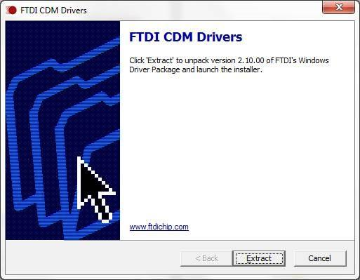
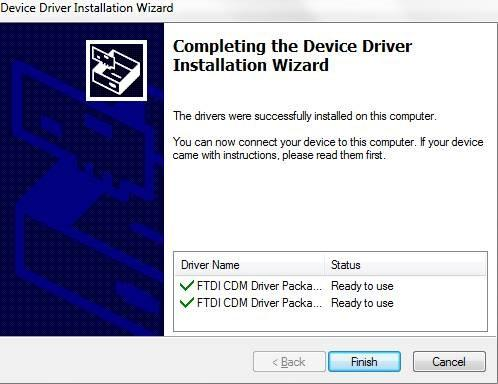
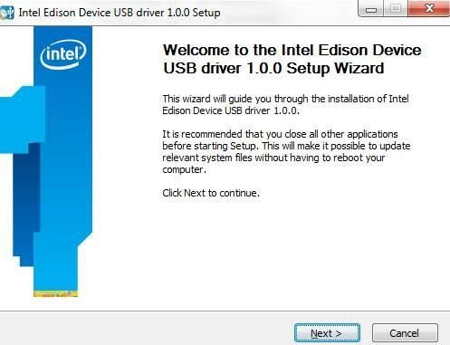
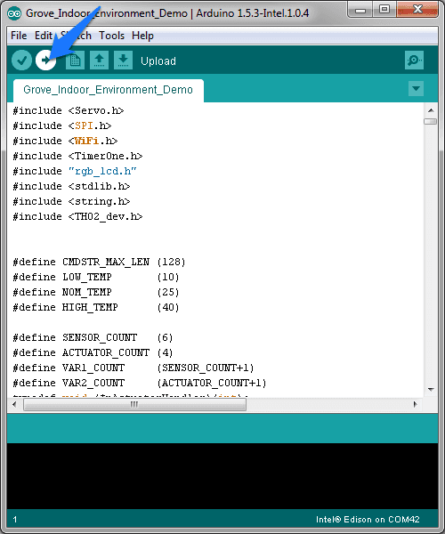

Grove Indoor Environment Kit for Edison makes it easy to create complete indoor environment applications with Intel Edison and Arduino Breakout Board. With the Base Shield V2, developer can plug up to 11 different Grove sensors & actuators quickly. We provide cool demo code which will be constantly updated, and it will be very easy to operate these sensors & actuators without any programming experience.
Refer to Intel Edison offical site: Edison Getting Started Guide
1. Download the Edison Arduino IDE.(Note: Select your OS.)
2. Navigate to the folder where you downloaded the .zip Edison Arduino IDE
3. Right click on the .7z file,highlight “7-zip”, and select “Extract to “arduino-…”

4. Click through the folder that was created until you see the IDE “arduino.exe” file.Double-click this file and this window should open.

1. Download FTDI drivers
2. Right-click the .exe file you downloaded, which should be called “CDM…” and select “Run as administrator”.
3. Click “Extract”.

4. Click “Next”.
5. Click “Finish” when you see this screen.

6. Download Intel Edison Drivers to install the required RNDIS, CDC, and DFU drivers.
7. Double-click the .exe file to begin the install.

Using 26AWG Grove Cable making the following connections:
| Grove Modules | Connected to |
|---|---|
| Temperature&Humidity Sensor | I2C |
| Moisture Sensor | A1 |
| Light Sensor | A2 |
| UV Sensor | A3 |
| PIR Motion Sensor | D7 |
| Encoder | D2 |
| Button | UART(D1) |
| LCD RGB Backlight | I2C |
| Relay | D5 |
| Servo | D6 |
| Buzzer | D4 |

1. Open the web site: Grove_Indoor_Environment_Demo to download the whole project.

2. Click Tools > Serial Port and select the Com # that the Intel Edison is connected to
3. Click Sketch>Import Library…>Add Library and import the library downloaded at step 1
4. Click File>Examples> Grove_Indoor_Environment_Demo and select the demo Click upload icon

5. Open Serial Monitor, it will print the sensors’ information:

6. Rotate the Encoder to check the sensor value on the LCD.

7. In the “Send TextBox”, you can enter the following command to operate the sensors and actuators:
set [sensor][condition:>, < or =][ threshold],[actuator]=[action]
| Example | Description |
|---|---|
| set temp>40, relay=1 | if temperature is higher than 40℃, the relay opens. |
| set temp>40, sleep=1 | if temperature is >40℃, nothing to do. |
| set humi>60, buzzer=1 | if humidity is >60%, the buzzer beeps. |
| set light>600, servo=90 | if light intensity is >600, the servo truns 90°. |
| set uv>80, relay=0 | if UV intensity is >80, the relay closes. |
| set pir=1, buzzer=1 | if people detected, the buzzer beeps. |
| set ms>40, relay=1 | if moisture is >40, the relay opens. |
| set ssid=name, psw=password | set the wifi SSID and Password.you can open a web browser, and go to the IP address displayed on the Serial Monitor or LCD. The default port is 88. he default port is 88. Such as: 192.168.1.101:88 |
Note:

8. WiFi connection. open the Serial Monitor, and set your ssid and password(as below). Check the local IP on the LCD or Serial Monitor. On a device connected on the same network, open a web browser, and go to the IP address above, you can see the sensor value.
Note: When visiting the web server, a port number(88)should be added,such as: 172.20.10.2:88.


If you have questions or other better design ideas, you can go to our forum or wish to discuss.
Copyright (c) 2008-2016 Seeed Development Limited (www.seeedstudio.com / www.seeed.cc)